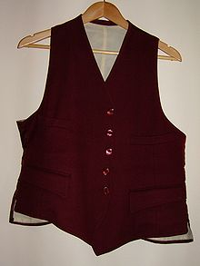

A waistcoat (UK and Commonwealth, /ˈwɛskət/ or /ˈweɪstkoʊt/; colloquially called a weskit[1]), or vest (US), is a sleeveless upper-body garment. It is usually worn over a dress shirt and necktie and below a coat as a part of most men's formal wear. It is also sported as the third piece in the traditional three-piece male suit.[2] Any given vest can be simple or ornate, or for leisure or luxury.[3] Historically, the vest can be worn either in the place of or underneath a larger coat dependent upon the weather, wearer, and setting.
Daytime formal wear and semi-formal wear commonly comprises a contrastingly coloured waistcoat, such as in buff or dove gray, still seen in morning dress and black lounge suit. For white tie and black tie, it is traditionally white and black, respectively.
Home